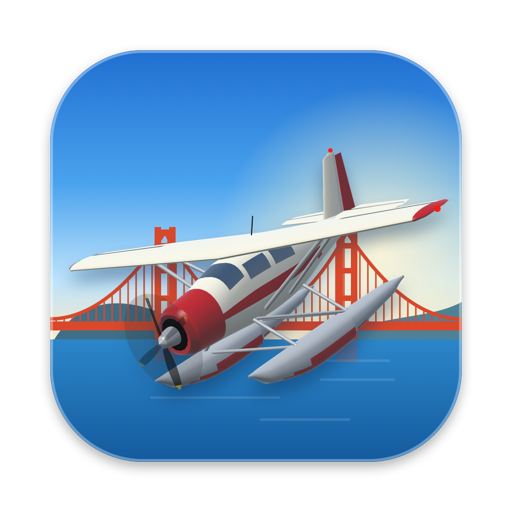
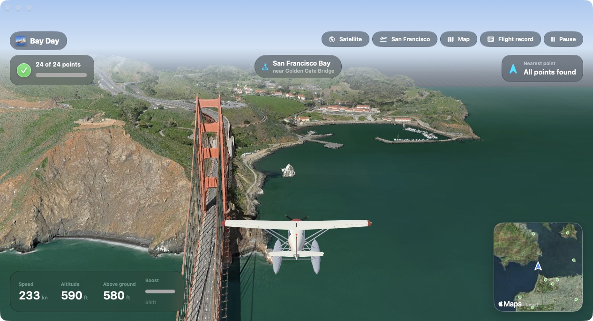
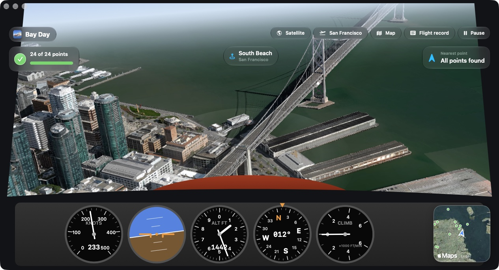
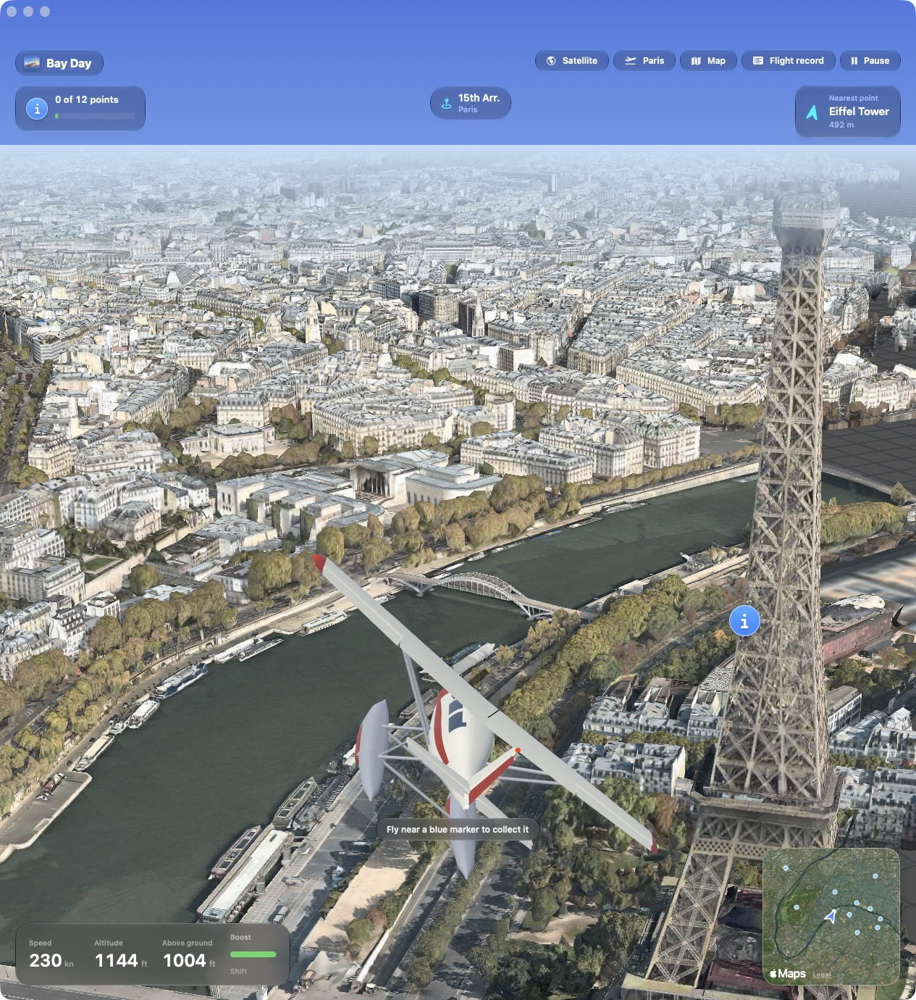
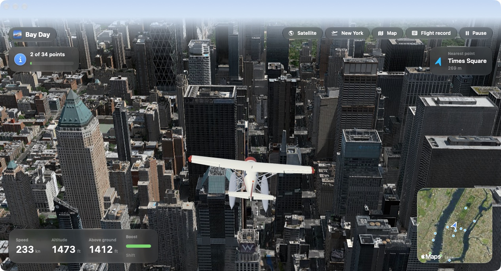

Bay Day
Fly a floatplane over twelve real cities, from San Francisco Bay to Tokyo, Paris and London. The scenery is Apple Maps; the plane, the flight model and the cockpit are the game.
Two ways to fly it


What is in it
Real cities
Apple's satellite Flyover imagery or its 3D city models. A label names the neighborhood, town or water below you.
A plane with weight
Dives build airspeed. Climbs and hard turns spend it. Brake in a steep climb and the wing stalls until you lower the nose.
Crashes
A shallow touch skips off the water. A steep one tumbles the plane with debris, then puts you back in the air above the spot.
Places to find
Fly past a marker to collect it and read a short fact about the place. Each city has its own flight record and a passport stamp for finding them all.
Gate routes
Timed routes in every city: along the Thames, up the Seine, across Tokyo Bay, around New York Harbor.
Native on the Mac
Swift, Metal and MapKit, with a Liquid Glass interface on macOS 26 and later. Keyboard or gamepad.
Twelve cities
🇺🇸 San Francisco · 🇺🇸 New York · 🇬🇧 London · 🇫🇷 Paris · 🇯🇵 Tokyo · 🇦🇺 Sydney · 🇮🇹 Rome · 🇭🇰 Hong Kong · 🇧🇷 Rio de Janeiro · 🇦🇪 Dubai · 🇺🇸 Los Angeles · 🇺🇸 Chicago
Each city has its own places to find, gate routes, starting points and signature tune, and keeps its own progress. Find every place in a city to earn its passport stamp.


Controls
| Steer | ←→ or AD |
|---|---|
| Climb | ↓ or S |
| Dive | ↑ or W |
| Boost | Shift or E |
| Brake | Space or Q |
| Camera: chase, far, cockpit | C |
| Satellite or 3D scenery | T |
| Map | M |
| Flight record | J |
| Pause | P or Esc |
Good to know
- A gamepad works: the left stick steers, the right trigger boosts and the left trigger brakes.
- Cruise is about 233 knots and boost about 447. The plane levels off at 2,400 metres.
- You can hit terrain and water. Buildings are scenery only, so you fly through them.
- High up, Apple's map limits how far the camera can tilt, so the view looks more steeply down.
Install
- Download BayDay.zip and unzip it.
- Move Bay Day to your Applications folder.
- Open it once from System Settings. The app is not notarized by Apple, so the first launch is blocked. Try to open it, then go to System Settings › Privacy & Security and choose Open Anyway.
Requires a Mac with Apple silicon, macOS 14 or later, and an internet connection for the scenery. You can also build it from source with Apple's command line tools.